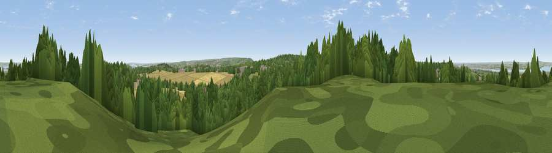

Viewpoint near Higham
#23730 in England · top 26% of its area beats it · near HighamThe view, rendered

A 360° render of this exact spot computed from the terrain model, tree cover and land cover — summer colours, afternoon light, calibrated against photographs of famous viewpoints. Real trees, hedges and buildings will differ in detail.
The panorama
Grey silhouette: terrain skyline in each direction (720 bearings, Earth curvature and refraction included). Dashed green: skyline with trees (+15 m) and buildings (+8 m) as obstacles. Blue strip: how far the ground is visible on each bearing.
Where the view opens
Wedge length = distance to the farthest visible ground on that bearing (vegetation-aware). Rings at 10, 25 and 50 km.
What fills the view
46% woodland · 32% cropland · 13% grassland · 7% built-up · 2% water
Angular shares of the visible panorama (visual magnitude), not map area. Landscape diversity 0.55 (0–1 Shannon).
Key numbers
More beautiful places nearby
The staircase of upgrades: each row has a higher view potential than everything closer. Driving times are estimates from straight-line distance, calibrated against real road routing — check an actual route before setting out.
| Place | Direction | Drive | Score |
|---|---|---|---|
| Viewpoint near Shorne | NW · 1 km | ~3 min | 53.2 |
| Viewpoint near Shorne | WNW · 2 km | ~4 min | 55.1 |
| Viewpoint near Burham | SSE · 8 km | ~16 min | 63.1 |
| Viewpoint near Birling | SSW · 9 km | ~18 min | 65.2 |
| Viewpoint near Boxley | SSE · 12 km | ~23 min | 68.6 |
| Viewpoint near Shipbourne | SW · 22 km | ~37 min | 69.1 |
| Viewpoint near Westwell | SE · 36 km | ~54 min | 72.2 |
| Viewpoint near Lympne | SE · 53 km | ~75 min | 72.6 |
51.40995, 0.44840 · source: screening · position refined by local search. Computed location — check access rights before visiting.